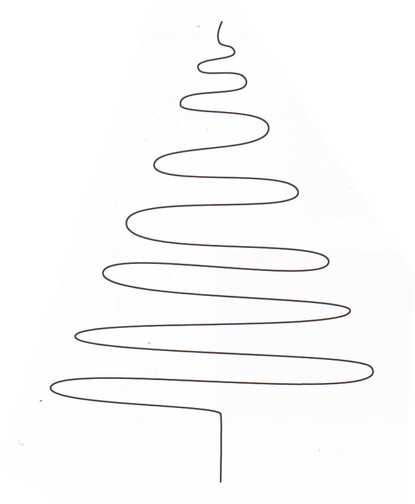

I decided to make my own math-based (cheesy) christmas card this year for my family. I have attached the LaTeX file below so you can edit it yourself. It uses the gcard package for a two-fold card on A4. Just save the image to the right in the same folder so that it compiles without error.
TeX file /n PDF output
